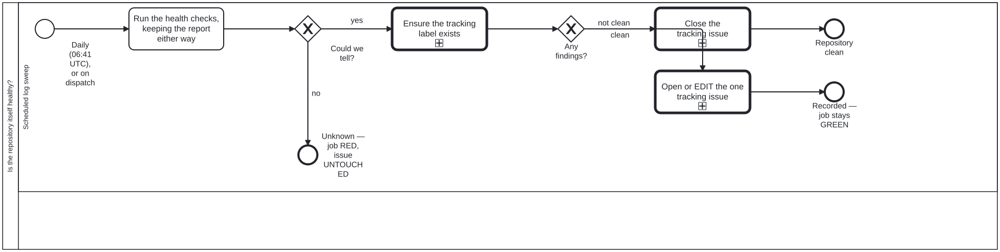

Generated from
cat-harness/processes/sdlc/repository-health-watch.bpmnbygen-processes-viz.ts— do not edit here. All processes
Process_RepoHealth · strict · 4 step(s)
Is the repository itself healthy — what the review previews cost the publish branch, what a clone costs, whether the work plan holds duplicates or unhonoured claims — reported in one tracking issue and never acted on. THE SAME SHAPE AS ci-health, ONE LEVEL OUT. That one asks whether the WORKFLOWS pass; this asks about the REPOSITORY — how much of gh-pages the review previews occupy, how big a clone costs, whether the work plan has duplicates or unhonoured claims.
IT REPORTS AND NEVER ACTS. Four of the five checks are about artefacts accumulating, and every finding’s action names something a PERSON does. That is deletion-requires-confirmation applied to the tool that most wants to break it: the skill’s own worked example is bean plj1, a workflow whose shape deleted every open PR’s preview without anybody deciding it. There is no removal task on this diagram, and its absence is the rule being followed rather than an omission.
THE REPORT IS KEPT WHETHER OR NOT THE CHECKS SUCCEED (if: always()), which is why Run the health checks says “keeping the report either way”. A sweep whose output survives only on success cannot be used to investigate the run that failed.
The daily cron is at 06:41, OFF THE HOUR deliberately: GitHub’s scheduler queues heavily at :00, and a delayed run is a run whose report is stamped later than the state it describes.
THE THIRD STATE IS THE WHOLE POINT, AND IT IS THE ONLY ONE THAT FAILS THE JOB. Verified 2026-09-20 by reading the if: guards: unknown runs exit 1; a finding does NOT. A repository in trouble leaves this workflow GREEN and speaks through the tracking issue, while a sweep that could not look turns the job red. That inversion is deliberate and is invisible from the run list, which is the argument for drawing it.
ONE TRACKING ISSUE, EDITED IN PLACE, never a comment and never a second issue — a feed nobody reads is the failure mode a watchdog invites. On unknown the issue is left UNTOUCHED: not closed, not opened, not edited. Closing it would assert the thing the sweep just failed to establish.
Ensure the tracking label exists sits AFTER Could we tell? and before the split, because both issue paths need the label — the clean path filters on it too, and on a repository where nothing has ever gone wrong it would not otherwise exist. It is skipped on unknown, where neither path runs and a label hiccup must not be what fails the job.

| lane | role | what it does here |
|---|---|---|
| Scheduled log sweep | build-pipeline |
The only lane in this diagram, and everything it does is either checking or recording — never removing, which is deletion-requires-confirmation applied to the shape most tempted to break it. It is also where the inversion lives: a real finding leaves the job GREEN and speaks through one tracking issue edited in place, while “could not tell” is the only outcome that turns the job RED and leaves that issue deliberately untouched. |
Every one of the 4 step(s) is documented.
| step | lane | skill / sub-process | what it does |
|---|---|---|---|
Run the health checks, keeping the report either wayTask_Check |
Scheduled log sweep | deletion-requires-confirmation |
Run bun run cat health –out and upload the JSON report whatever the verdict — on unknown it is the only evidence of why the sweep went blind. Exit 0 clean, 1 gating findings, 2 could not check; exit 1 with no report is a crash. The checks report and never act: every finding names something a person does. |
Ensure the tracking label existsTask_Label |
Scheduled log sweep | ci-health |
Create the repo-health label with –force so it exists before either issue path runs — the close path filters on it too, and on a repository that has never had a finding it would not exist yet. Skipped on an unknown verdict. |
Close the tracking issueTask_Close |
Scheduled log sweep | ci-health |
Clean: close the open repo-health issue, if any, saying why (every check ran and none had anything to report). Runs only on a clean verdict — on unknown the issue is left untouched and the job fails instead, because could-not-check is never rendered as clean. |
Open or EDIT the one tracking issueTask_Track |
Scheduled log sweep | ci-health |
Findings: EDIT the one open issue labelled repo-health if there is one, otherwise create it, with the report as the body. One issue edited in place, never a new issue or a comment per run, so the tracking issue never becomes a feed. The body states that nothing in it has been acted on. |
Every one of the 2 decision(s) is documented.
| decision | what decides it | branches |
|---|---|---|
Could we tell?GW_Determined |
Asked of the verdict output of ‘Run the health checks’ in .github/workflows/health-check.yml, which runs bun run cat health --out. Exit 0 is clean, 1 gating finding(s), 2 could not check; an exit 1 with no report file is a crash and is reclassified as could-not-check, as is any other code. no is verdict == ‘unknown’: ‘Refuse to report success on an unchecked repository’ runs exit 1 and the tracking issue is left untouched. yes is verdict != ‘unknown’, the guard on ensuring the repo-health label. The report is uploaded as an artifact on every verdict (if: always()), including this one. |
no → Unknown — job RED, issue UNTOUCHED yes → Ensure the tracking label exists |
Any findings?GW_Finding |
Asked of the same verdict. clean is verdict == ‘clean’: the repo-health tracking issue is closed. not clean is verdict == ‘findings’: the one tracking issue is opened or edited in place with the report. A finding does not fail the job; only unknown does. |
clean → Close the tracking issue not clean → Open or EDIT the one tracking issue |